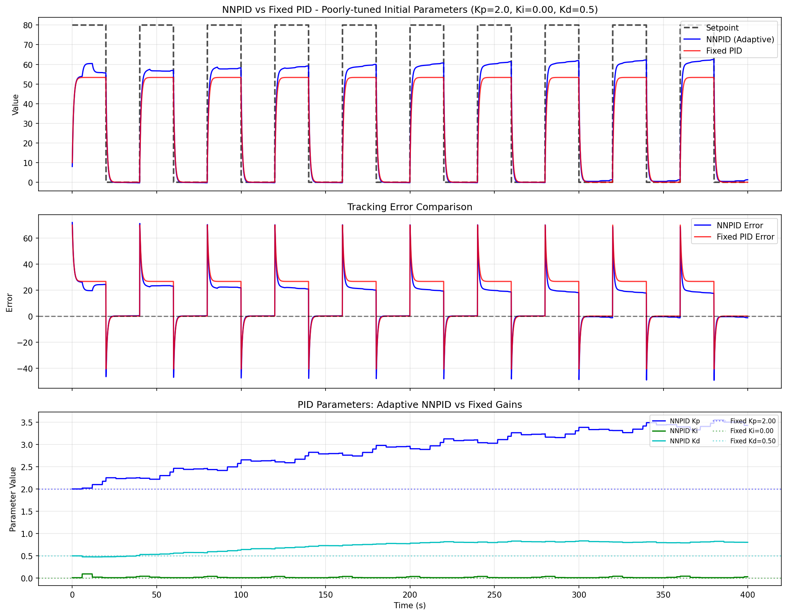
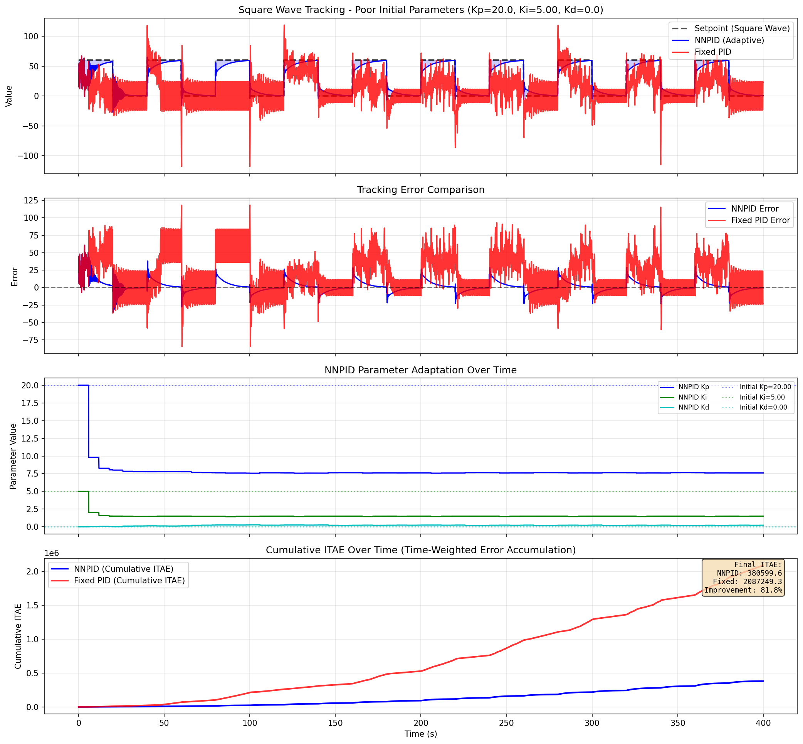

Result Interpretation
When using NNPID, the most important runtime quantities are:
setpoint: the target value,measured: the actual process output,output: the control command,kp / ki / kd: the current adaptive PID gains.
What Good Behavior Looks Like
In normal use, users generally want to see:
smaller tracking error after repeated operation,
acceptable overshoot,
smoother settling,
gains that change gradually instead of jumping violently.
Basic Recommendation
Before applying NNPID to a real system, run at least one step test and one disturbance test. If the output remains saturated for long periods or gain values fluctuate too aggressively, reduce adaptation aggressiveness and re-check your sampling period.
Collaboration Notes
When sharing results with collaborators, it is usually enough to provide:
the test scenario,
the initial PID gains,
the final tracking result,
a short description of overshoot and settling quality.
Visual Demonstrations
The following plots are synchronized from the latest comparison tests and stored under docs/images
with simplified OUT_ naming for documentation publishing.
Steady-State Error Reduction
{kind=link}

Scenario summary:
Fixed PID starts from P-dominant settings and keeps visible static bias.
NNPID gradually increases integral contribution and reduces long-term tracking offset.
Oscillation Suppression
{kind=link}

Scenario summary:
Fixed PID with aggressive gains shows persistent overshoot and oscillation.
NNPID learns to reduce aggressive gains and introduces damping for faster stabilization.